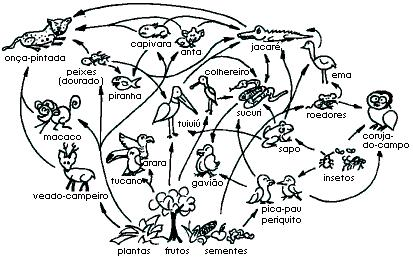
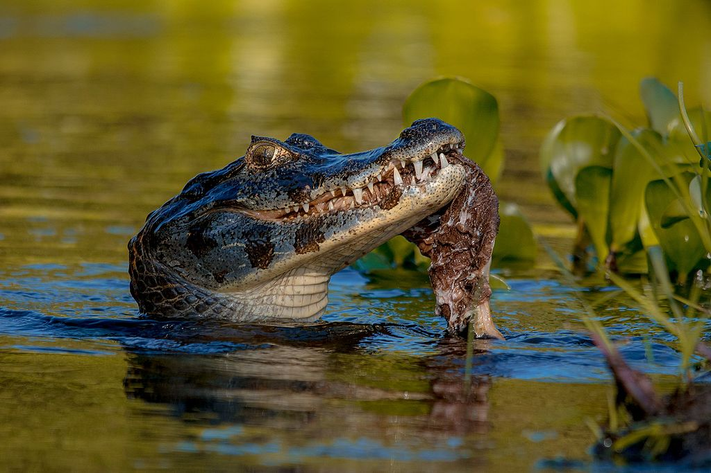

Teia
alimentar
Exemplo de teia alimentar
Biodiversidade
O Pantanal preserva grande quantidade de espécies tanto na flora e fauna. Possuindo 4.700 espécies, sendo elas 3.500 plantas (árvores e vegetações aquáticas e terrestres), 325 peixes, 53 anfíbios, 98 répteis, 656 aves e 159 mamíferos espalhados pelos territórios pantanenses.
Uma individualidade do bioma pantanense se localiza na grande diversidade aquática presente devido a dinâmica de cheias, que proporciona uma variedade de espécies de peixes como pintados, pacus, dourados, piauçus e jaús.
Relacões ecológicas
A presença dos jacarés no bioma é de extrema importância ecológica, sendo eles os principais agentes reguladores da qauntidade de peixes, em principal espécies de piranhas, devido a grande quantidade de predação de peixes feita por eles, impossibilitando um desequilíbrio no ambiente aquático do Pantanal.
A caça ilegal de jacarés para confecção de roupas e objetos trás um perigo vigente ao equilíbrio ambiental, sendo o extermínio em grande quantidade dos jacarés causador de um problema ambiental gigantesco que pode colocar riscos ao ser humano a haver um aumento na população de piranhas.
Unidades de preservação devem ser ampliadas visto que hoje menos de 20% do bioma pantanense é protegido por unidades de preservação, havendo uma extensa área a mercê de criminosos ambientais e interesses latifundiários. A diminuição da população de jacarés não é um problema isolado, é um problema que atinge pricipalmente a população humana que vive no Pantanal e a indústria turistíca, trazendo benefícios tanto econômicos tanto ambientais sua preservação e manejo consciente.
Foi observada uma relação mutualista entre formigas e plantas do Pantanal, em processos, tais como, proteção, polinização, dispersão de sementes, entre outros. Com o aumento da interferêcia humana no bioma, houve uma diminuição de dispersores primários (pássaros e mamíferos), ocasionando num fortalecimento entre plantas e formigas (dispersores secundários ) que vem se tornando cada vez mais importantes no processo de dispersão de sementes. Em troca as plantas proporcionam segurança e habitat as formigas além de diversos outros benefícios.